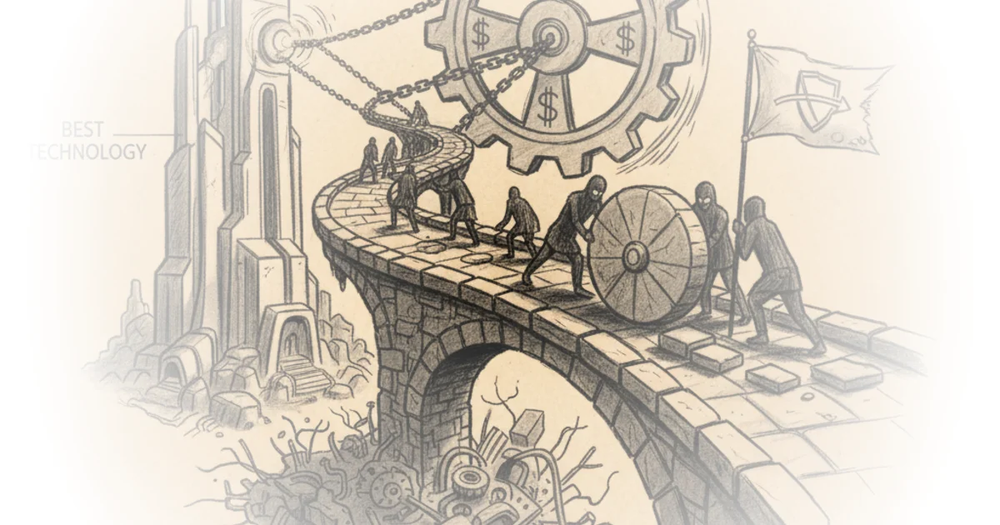

What founders get wrong about selling to enterprises
Commentary by Brian Edwards
Deep Dives
Explore these related deep dives:
-
SWIFT
The article cites SWIFT's persistence despite inefficiency as a prime example of how regulatory comfort and shared governance trump technical superiority in enterprise adoption.
-
COBOL
This legacy programming language illustrates the article's core argument that enterprises prioritize the existential risk of rewriting stable systems over the potential upside of modern architecture.
-
Batch processing
The text highlights batch file transfers as a specific technical mechanism that persists not because it is fast, but because it creates the clear checkpoints and audit trails required by enterprise risk models.